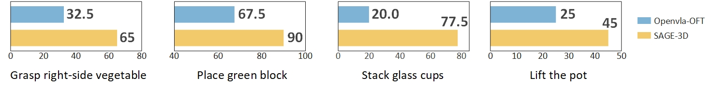

SAGE-3D.
Semantic-Aware 3D Representations for
Generalizable Vision-Language-Action Models
1Westlake University 2Zhejiang University 3Xi’an Jiaotong University 4Zhengzhou University 5HKUST(GZ) 6BAAI 7Westlake Robotics
3D grounding,
made semantic.
Vision-Language-Action models show strong potential for language-conditioned robotic manipulation, but their reliance on 2D visual backbones limits precise reasoning about depth, spatial relations, and contact-rich actions. We propose SAGE-3D, a semantic-aware 3D VLA framework that aligns geometric structure with task semantics for instruction-conditioned action prediction.
SAGE-3D introduces a 3D Semantic-Aware Feature Generator (SAFG), integrating RGB semantics, depth information, and task instructions to produce 3D Reasoning Tokens. A FiLM-based geometry-conditioned decoder lets this spatial context modulate action generation directly.
From pixels to
reasoning tokens.
Geometry is most useful when it knows what the instruction is asking for. SAGE-3D couples transferable 3D structure with task-relevant semantics, then routes that context into the action head.
Semantic-Aware
Feature Generator
RGB + depth + instruction
3D Reasoning
Tokens
Objects · relations · affordances
FiLM Geometry-
Conditioned Decoder
Spatial context → action
Reliable in the lab.
Ready for reality.
state-of-the-art
Spatially demanding tasks
benefit most from 3D.
SAGE-3D improves performance and training efficiency across simulation and real-world manipulation, with the largest gains on tasks that require accurate spatial grounding.

Watch the robot work
Original-speed demonstrations from our real-world evaluation.
Build on
SAGE-3D.
@inproceedings{ding2026sage3d,
title = {SAGE-3D: Semantic-Aware 3D Representations for
Generalizable Vision-Language-Action Models},
author = {Ding, Pengxiang and An, Xuanxuan and Yu, Kexian and
Wang, Haoying and Lin, Minghui and others},
booktitle = {Conference on Robot Learning (CoRL)},
year = {2026}
}